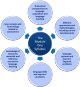

Delta Module One Course
 |
Syllabus area 1
|
 |
This section of the course covers the first area of the Delta syllabus for Module One. At the end of this section, you should be able to:
|
The guides on the right are those on this site which cover the areas. You should follow those and then return to this page (using the back button each time) to try some tests of your knowledge.
 |
The very brief overview of what you need to know |
There are two competing ideas about where to star when designing ways to teach a foreign language.
- Idea 1: We learn a second language in the same way we learned our first language(s)
- Many theories which underlie classroom practice are based on an
intuitive but unproven assumption that replicating the ways in which
we acquired our first language will be inherently better than
teaching people about the language and hoping that this
will enable them to use it accurately to get things done.
Unfortunately, there is no profession-wide consensus concerning just how we acquire our first language(s). The links, therefore, between second-language teaching methodology and first-language learning theories remain somewhat obscure. Simply put, any second-language pedagogy based on a first-language acquisition theory (or mix of theories) will reflect the preferred theory of first-language learning.
For example, if you hold the belief that we learn our first language by imitation of the language we hear around us, then you may be inclined to develop a methodology containing a great deal of modelling and repetition. If, on the other hand, you believe that people learn their first language by hearing it and making, confirming or adjusting hypotheses concerning how it is used and structured, then you may be drawn to a second-language teaching methodology which involves presenting people with lots of good data about the language they are learning (i.e., rich examples of it in use) and leading them to draw their own conclusions to develop an internalised set of rules about structure and use.
There are, of course, a number of persuasive theories about how we learn our first language and following the guides linked below will help you understand them. From that, you can form a critical understanding of those theories of second-language learning which claim to replicate first-language acquisition. - Idea 2: We learn a second language in a way fundamentally different from the way we learned our first language(s)
- A different point of view is one that holds that second-language
learning is a fundamentally different process from first-language
acquisition. Those who take this view will not be constrained
to make second-language learning methodology replicate whatever they
believe first-language acquisition involves.
This means that the focus can be shifted to ideas about how mature brains operate and how memory, the assimilation of new data and so on function. From this point of view, too, come considerations of motivation, understanding the sources of error and so on. For example, if you believe that human brains actively seek patterns in the data they perceive around them to make sense of it, then much of the effort to construct an effective teaching approach will focus on language patterns rather than a more generalised view of the natural and almost effortless picking up of language that children are capable of doing. If, to present another example, you believe that many language items are stored as usable, pre-fabricated chunks then you may be drawn to a methodology which focuses on phrases and collocating words to encourage language learning. If you don't believe that and are convinced that we store language items discretely in areas associated with their senses and shapes, then your approach to teaching will be different.
The approaches outlined here are distinct but you will find a
good deal of overlap between them and some of the key concepts,
cognitivism vs. behaviourism, repetition and drilling vs. guided
discovery and communicative exercises and so on are common to both
schools of thought.
What will vary is the emphasis that is given to the concepts and how
strictly the methodology reflects the theory.
 |
A cumulative approach to the first two sections of the syllabus |
This section and the next, Approaches and methodologies, are very closely linked. You can take each of the two sections in turn and your knowledge will accumulate. The tests and examination practice are the same for both sections.
| Syllabus areas | Guides to follow |
|
Historical and current hypotheses
and
theories of language and FLA (e.g. imitation,
innateness, cognitive-developmental) Similarities and differences between first- and second-language acquisition |
Theories of second-language acquisition (SLA) |
| First and second language acquisition | |
| How Learning Happens | |
| Key concepts related to these (e.g. language acquisition device, critical period etc.) | Input |
| Chomsky | |
| Historical and current hypotheses and theories of SLA (e.g. behaviourist, cognitive) | Post-method methodology |
| The history and development of ELT | |
| Key concepts related to these (e.g. interlanguage, natural order hypothesis, monitor model etc.) | Krashen and the Natural Approach |
| Understanding error |
Once you have worked your way through the guides and done some research, it's time to test your knowledge in these areas and then do some revision exercises.
Because this area and the next (Approaches and methodologies)
are so closely linked, the tests and examination practice are the
same for both. You can try the tests now or wait until you
have followed the section on
Approaches and methodologies.
It's up to you.
There is a section of the
Delta Module One Revision Course for this area of the syllabus.
First step: do the tests.
Second step: apply your knowledge to the examination.
|  |
 |
| course index | exam practice |